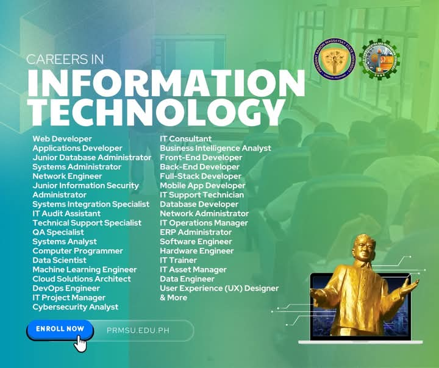
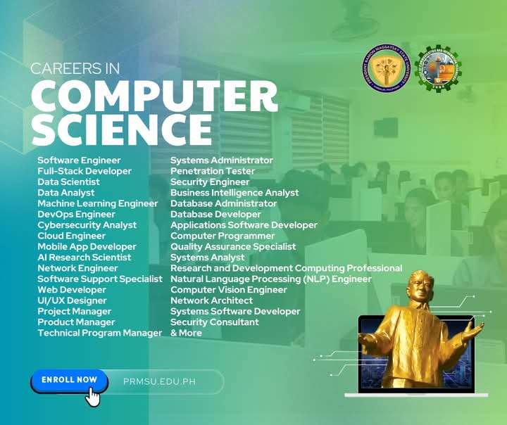

PROGRAM
OBJECTIVES
The Bachelor of Science in Information Technology aims to:
1. Prepare graduates to be equipped with the principles and theories of computing leading to design and develop technological solutions for the industry, government and academe;
2. Develop globally competitive and well-rounded IT professionals for business solutions through innovations in the global digital community; and
3. Produce ethically responsible leaders in the management of computing technologies. management of computing technologies.
PROGRAM
OBJECTIVES
The Bachelor of Science in Computer Science aims to:
1. Prepare graduates to be equipped with the principles and theories of computing leading to the conduct of research and advanced studies;
2. Develop globally competitive and well-rounded CS professionals and researchers, proficient in designing and developing computing solutions; and
3. Produce morally upright leaders in the fast-changing ICT industry.
COURSES
OFERRED
BACHELOR OF SCIENCE
IN INFORMATION
TECHNOLOGY
The Bachelor of Science in Information Technology aims to: Prepare graduates to be equipped with the principles and theories of computing leading to design and develop technological solutions for the industry, government and academe; develop globally competitive and well-rounded IT professionals for business solutions through innovations in the global digital community; and produce ethically responsible leaders in the management of computing technologies.
BACHELOR OF SCIENCE
IN COMPUTER SCIENCE
The Bachelor of Science in Computer Science aims to: Prepare graduates to be equipped with the principles and theories of computing leading to the conduct of research and advanced studies; develop globally competitive and well-rounded CS professionals and researchers, proficient in designing and developing computing solutions; and produce morally upright leaders in the fast-changing ICT industry.
FUTURE
CAREERS

